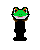

Los desarolladores
Alex Cruanyes Mendoza
El Señor Pepe: Programador principal
Un joven excepcional que destaca por su bondad, dedicación y amabilidad. Alex es un chico ejemplar que siempre se esfuerza por realizar sus tareas con la más alta calidad posible. Su compromiso y atención al detalle son evidentes en cada proyecto que emprende. Ya sea en el ámbito académico, laboral o en cualquier otro aspecto de su vida, Alex siempre se entrega por completo y busca superar las expectativas.